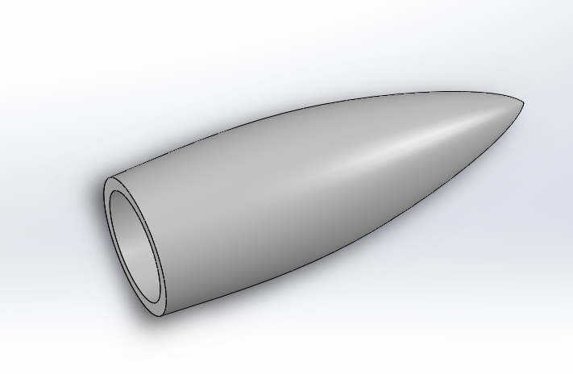
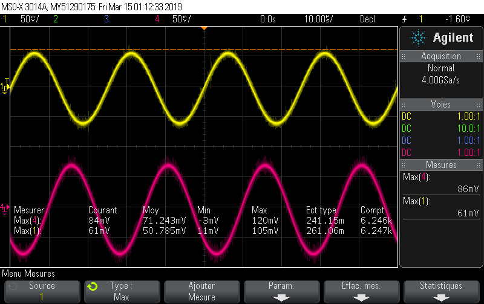
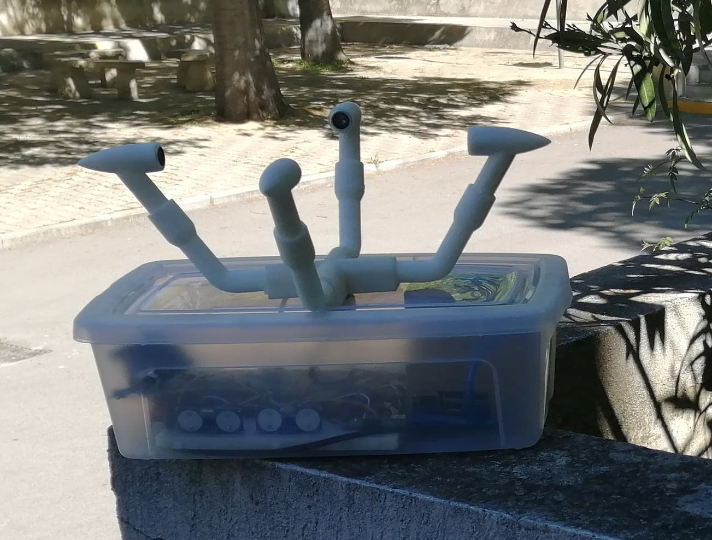
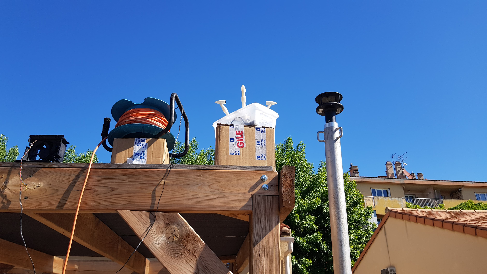

Créé par TACHEN Lucas, NOUR Thomas et CHAIZEMARTIN Nicolas
Dans le cadre des projets de SI, nous avons voulu créer une station météo qui changeait de l'ordinaire ...
Les anémomètres à coupelles sont majoritairement utilisés
et les anémomètres à ultrasons actuels peinent à se développer.
Ceux-ci permettent d'obtenir une grande précision
et notre défi a été de rendre utilisable cette technologie par tous.
Notre projet viendrait en remplacement de la manche à air
en comblant le manque de précision actuel
Le modèle a été réalisé avec le logiciel Solidworks
Nous l'avons ensuite imprimé à l'aide d'une imprimante 3D
Le profilage des capteurs
Des sons plus aigus que l'audible
De 20kHz à plusieurs centaines de MHz
Un transducteur est un objet permettant de convertir un signal physique en un autre type
Ici un signal électrique est converti en une onde sonore
f(t)=A.sin(ωt)
Avec t le temps en s, A l'amplitude en V et ω la pulsation en rad/s
Par exemple avec la courbe jaune :
f(t)=50.10^(-3) . sin(2π×40.10^3×t)

digitalWrite(nstrigPin, LOW);
delayMicroseconds(2);
digitalWrite(nstrigPin, HIGH);
delayMicroseconds(10); //Trig envois pendant 10µs
digitalWrite(nstrigPin, LOW);
duree_ns = pulseIn(nsechoPin, HIGH); //Mesure du temps à l'état haut
(qui est de 331.5+0,607T m/s avec T la température en °C)
Mettre des transducteurs aux quatres points cardinaux en imaginant un repère où le vent sera un vecteur projeté sur les axes
Et faire un peu de trigo!
On peut calculer la direction du vent
Liaison série de l'arduino vers un ordinateur
void setup() {
Serial.begin (9600);
}
void loop() {
.
:
Serial.println(String(j)+';'+String(duree_ns)+';'+String(duree_eo));
:
.
}
Qui reçoit les données de l'arduino
et qui calcule la vitesse et la direction du vent
Nous avons inséré un Raspberry pi ainsi qu'une batterie
De plus les données vont être envoyées vers un serveur domotique
Par rapport aux mesures de Météo France
En modifiant les transducteurs et en le rendant étanche